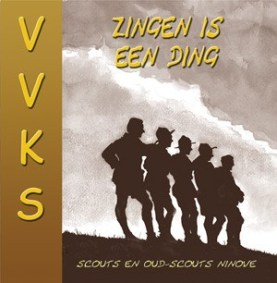

<main class="page blog-post-list">
    <section class="clean-block clean-blog-list dark">
        <div class="container">
            <div class="block-heading">
                <h2 class="text-success">VT CD</h2>
                <p style="max-width: 800px;" class="text-justify">
                    Scouts Ninove kent sinds jaar en dag een traditie van liekes zingen. Aangezien we deze pareltjes met
                    de wereld willen delen, hebben we een selectie samengeperst op de VTcd Zingen is een ding: 74
                    minuten pittige scoutsmuziek, waaronder het beloftelied, het avondlied, kom kameraden en tal van
                    andere welpen-, trekkers- en kampvuurliedjes. </p>
            </div>
            <div class="block-content">
                <div class="card mb-12">
                    <div class="row no-gutters">
                        <div class="col-md-4">
                            
                        </div>
                        <div class="col-md-8">
                            <div class="card-body">
                                <p class="card-text text-justify">
                                    <br><br>
                                    De cd kost €14 (+ €1,6 verzendingskosten) en is te bestellen door storting van €15,6 op BE48 0014
                                    9120 3127, met als vermelding Scouts CD en uw naam en adres! U kan de cd ook verkrijgen door deze zelf af te halen in Ninove.
                                    Hiervoor mail je best naar <a href="mailto:cd@scoutsninove.be" class="text-success">cd@scoutsninove.be</a>.
                                </p>
                            </div>
                        </div>
                    </div>
                </div>
                <p>
                    <br>
                <div class="text-center">
                </div>
                <br>

                </p>
            </div>
        </div>
    </section>
</main>